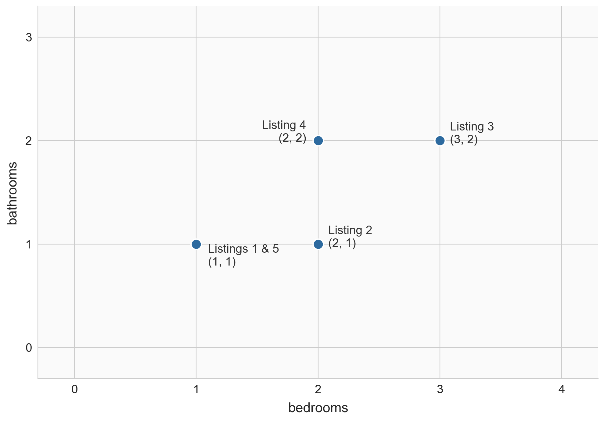
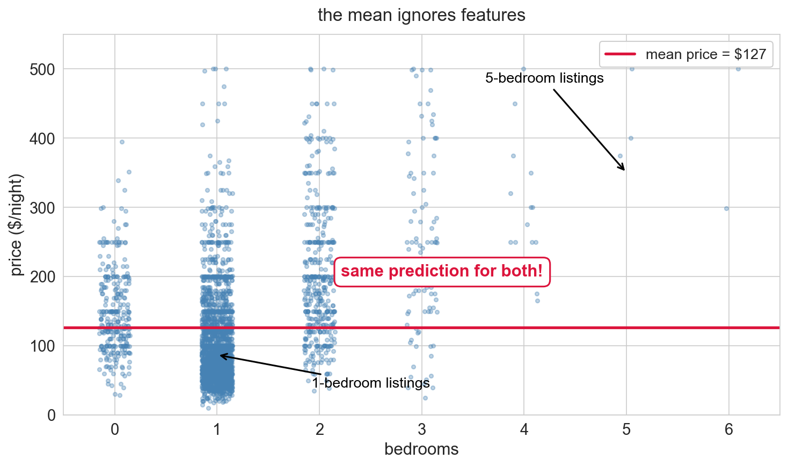
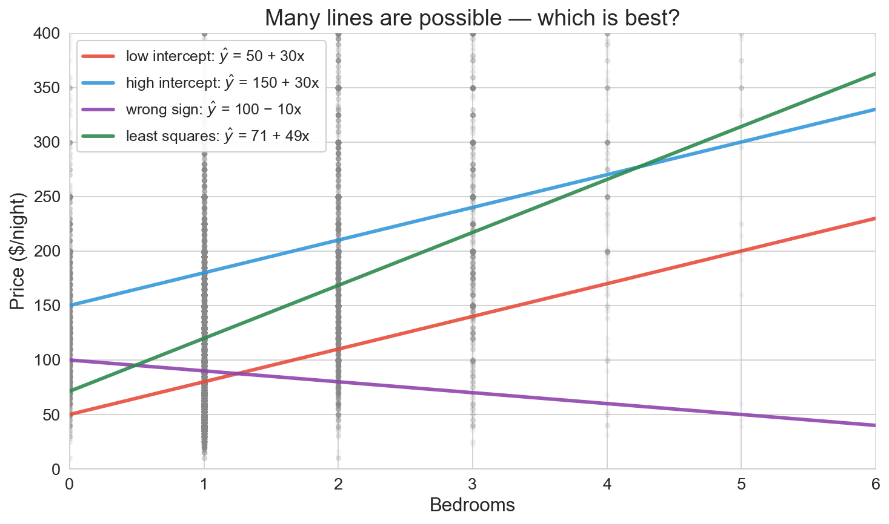
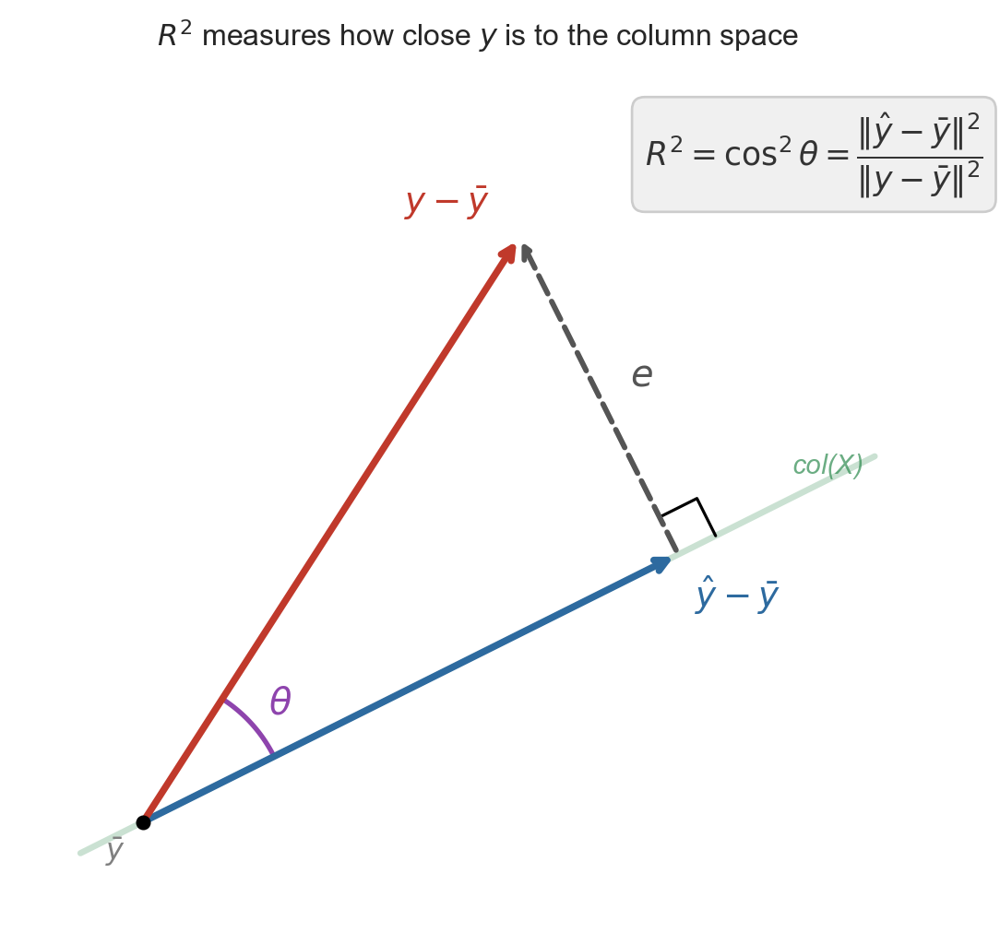

Lecture 4: From the Mean to Simple Regression
Applied Statistics: From Data to Decisions
Professor Madeleine Udell
Wednesday, April 8, 2026
a friend’s Brooklyn listing
text from a friend: “just listed my 2-BR on Airbnb — am I pricing this right?”
first instinct: charge the average
but the average knows nothing about their listing
bigger places should cost more — can we do better?
today
- vectors in data: rows, columns, norms
- predicting with no features: the mean
- predicting with one feature: simple regression
- how good is the fit?: \(R^2\) and correlation
- regression to the mean
two views of a dataset
| 1 |
1 |
1 |
100 |
| 2 |
2 |
1 |
150 |
| 3 |
3 |
2 |
250 |
| 4 |
2 |
2 |
200 |
| 5 |
1 |
1 |
120 |
- row view: each listing is a point in \(\mathbb{R}^d\) — listing 3 = \((3, 2, 250)\)
- column view: each feature is a vector in \(\mathbb{R}^n\) — bedrooms = \([1, 2, 3, 2, 1]\)
rows as points

nearby points = similar listings
visualizing high-dimensional vectors
a column of \(n\) prices lives in \(\mathbb{R}^n\) — too many dimensions to draw as an arrow
index plot: plot value vs listing index
black = price, red = bedrooms (sorted by price) — they move together
difference vector
\[\text{listing 3} - \text{listing 1} = (3, 2) - (1, 1) = (2, 1)\]
tells us how they differ: +2 bedrooms, +1 bathroom
but how far apart as a single number?
norm = length of a vector
\(\|v\| = \sqrt{v_1^2 + v_2^2 + \cdots + v_n^2}\)
Pythagorean theorem in \(n\) dimensions.
np.linalg.norm([2, 1])
# sqrt(4 + 1) = 2.24
distance = norm of the difference: \(d(u, v) = \|u - v\|\)
the norm will measure prediction error
predict every listing with a single number \(\widehat{y}\)
residual: \(\epsilon_i = y_i - \widehat{y}\) — one error per listing
\(\|\epsilon\|\) measures total prediction error
what does it mean for two Airbnb listings to be “similar”?
- think (30s): which features should count?
- pair (1 min): do you agree on the same features?
- share: what’s your definition of “close”?
predicting with no features
the simplest predictor: a constant
\(n\) prices. what single number \(\widehat{y}\) should we guess for every listing?
two natural losses
minimize absolute error or squared error?
absolute → median; squared → mean
why should the mean win?
before the proof, a moment of reflection:
as \(c\) moves through the data, what happens to the derivative of \((y_i - c)^2\)?
why does that force a balance exactly at \(\bar{y}\)?
why squared error gives the mean
\[\frac{d}{dc}\sum_i (y_i - c)^2 = -2\sum_i (y_i - c) = 0\]
\[\Longrightarrow \quad c = \frac{1}{n}\sum_i y_i = \bar{y}\]
the mean is the optimal constant predictor under squared error
notation
- \(y = (y_1, \ldots, y_n)\) — response vector (actual prices)
- \(\widehat{y}\) — prediction vector
- \(\bar{y} = \frac{1}{n}\sum_i y_i\) — sample mean
- \(\epsilon = y - \widehat{y}\) — residual vector
- \(\beta_0\) — intercept
for the constant model: \(\widehat{y}_i = \beta_0\), and the best \(\widehat{\beta}_0 = \bar{y}\)
residuals sum to zero
when \(\widehat{y}_i = \bar{y}\):
\[\sum_i \epsilon_i = \sum_i (y_i - \bar{y}) = n\bar{y} - n\bar{y} = 0\]
in vector notation:
\[\mathbf{1}^T \epsilon = 0\]
the residual is orthogonal to the ones vector — our first normal equation
squared error → conditional mean
same argument, applied within each slice of \(x\):
squared-error regression estimates \(\mathbb{E}[Y \mid X = x]\)
(absolute error → conditional median; other losses → other summaries)
when should you predict with the mean vs the median?
- turn to your neighbor (2 min)
- real estate prices: mean or median?
- insurance claims: mean or median?
- what’s the difference between “typical” and “average”?
predicting with one feature
the mean ignores bedrooms

a 5-bedroom apartment and a studio get the same prediction
a linear combination of two columns
\[\widehat{y}_i = \beta_0 + \beta_1 \, x_i\]
\(\widehat{y}\) is a linear combination of \(\mathbf{1}\) and \(x\):
\[\widehat{y} = \beta_0 \, \mathbf{1} + \beta_1 \, x\]
the span: all reachable predictions
\(\text{span}(\mathbf{1}, x) = \{\beta_0 \mathbf{1} + \beta_1 x : \beta_0, \beta_1 \in \mathbb{R}\}\)
all lines you could draw through the scatter plot
every \((\beta_0, \beta_1)\) traces a different line — which one is best?
before you see any candidate lines: what would “best” look like?
- think (30s): commit to a criterion
- “passes through the middle of the cloud” is a starting point
- make it precise enough that you could compute it
many lines are possible — which is best?

- red, blue: too steep at the low end
- purple: slopes the wrong way
- green: closer but still arbitrary
we need a principled criterion — and it turns out to be geometric
switch to the column view
\(y\), \(\mathbf{1}\), and \(x\) all live in \(\mathbb{R}^n\) — one coordinate per listing
\(\text{span}\{\mathbf{1}, x\}\) = a flat plane floating in \(\mathbb{R}^n\)
every line you could draw = one point on that plane
the actual price vector \(y\) sits off the plane — no line fits every listing perfectly
the geometric view: projection

- \(y\) is a point in \(\mathbb{R}^n\)
- \(\text{span}\{\mathbf{1}, x\}\) is a plane through the origin
- the closest point in the plane is the best prediction
- the residual \(\epsilon\) is perpendicular to the plane
the inner product
Inner product (dot product)
\(u^T v = \sum_{i=1}^n u_i v_i\)
- positive → same direction
- zero → orthogonal
- negative → opposite directions
take \(u = (1, 0)\) along the x-axis:
- \(u \cdot (1, 1) = 1\) → acute angle
- \(u \cdot (0, 1) = 0\) → right angle
- \(u \cdot (-1, 0) = -1\) → opposite
price and bedrooms both trend up → large positive \(y^T x\)
orthogonality = best fit
the best prediction makes the residual orthogonal to every feature:
\[\mathbf{1}^T \epsilon = 0 \qquad \text{and} \qquad x^T \epsilon = 0\]
- first: residuals sum to zero (same as the mean model!)
- second: residuals have no remaining linear pattern with \(x\)
if some feature still aligned with the residual, you could reduce error by adjusting its coefficient
normal equations
Normal equations (simple regression)
\(\mathbf{1}^T \epsilon = 0 \quad \text{and} \quad x^T \epsilon = 0\)
where \(\epsilon = y - \beta_0 \mathbf{1} - \beta_1 x\)
— the algebraic form of “residual orthogonal to features”
these two equations determine the unique \((\widehat{\beta}_0, \widehat{\beta}_1)\)
the projection picture

\(\widehat{y}\) = orthogonal projection of \(y\) onto \(\text{span}\{\mathbf{1}, x\}\)
the right angle is why it’s the best fit
simple regression on Airbnb
model = LinearRegression()
model.fit(df[['bedrooms']], prices)
ŷ = 71 + 49 × bedrooms
R² = 0.156
\[\widehat{y} = 71 + 49 \times \text{bedrooms}\]
interpreting the coefficients
\[\widehat{y} = 71 + 49 \times \text{bedrooms}\]
- intercept $71: predicted price for a studio (0 bedrooms)
- slope $49: each additional bedroom → $49 more per night
association, not causation — larger listings differ in many ways
plug in a few listings
\[\widehat{y} = 71 + 49 \times \text{bedrooms}\]
| studio |
$71 |
| 1-bedroom |
$120 |
| 3-bedroom |
$217 |
| 5-bedroom |
$314 |
back to our friend’s 2-BR: model predicts $169/night
verify orthogonality
y_hat = model.predict(df[['bedrooms']])
residuals = prices - y_hat
np.dot(residuals, np.ones(len(df))) # ≈ 0
np.dot(residuals, df['bedrooms'].values) # ≈ 0
residuals · 1 : -0.0000 ✓
residuals · bedrooms: -0.0000 ✓
the errors have no linear pattern left that bedrooms could capture
what would a curved pattern in the residual plot mean?
- think (30s): if residuals vs bedrooms showed a U-shape…
- pair (1 min): what’s the model missing?
- share: how would you fix it?
\(R^2\): fraction of variance explained
\(R^2\) (coefficient of determination)
\[R^2 = 1 - \frac{\|\epsilon\|^2}{\|y - \bar{y}\|^2}\]
- \(R^2 = 0\): no better than predicting \(\bar{y}\)
- \(R^2 = 1\): perfect fit
for our Airbnb regression: \(R^2 = 0.156\)
correlation
Correlation (Pearson’s \(r\))
\(r(u, v) = \dfrac{(u - \bar u)^T(v - \bar v)}{\|u - \bar u\|\,\|v - \bar v\|}\)
inner product of centered, length-normalized vectors.
- \(-1 \le r \le +1\)
- \(r = 0\) → centered vectors are orthogonal
- unitless: rescaling \(u\) or \(v\) doesn’t change \(r\)
\(R^2 = r(y, \widehat{y})^2\)

Pythagorean theorem (centered \(y\)):
\[\|y - \bar{y}\|^2 = \|\widehat{y} - \bar{y}\|^2 + \|\epsilon\|^2\]
\[R^2 = \frac{\|\widehat{y} - \bar{y}\|^2}{\|y - \bar{y}\|^2} = r(y, \widehat y)^2\]
the first ratio is the correlation between \(y\) and \(\widehat{y}\), by definition
\(R^2 = r^2\) in simple regression
r = df['price'].corr(df['bedrooms'])
# r = 0.3944
model.score(df[['bedrooms']], prices)
# R² = 0.1556 = r²
for one predictor: \(R^2\) is literally \(r\) squared
(with multiple predictors, only \(R^2\) applies)
Galton’s heights
Francis Galton, 1886: tall parents → tall children, but less tall
934 children, 205 families: \(r \approx 0.50\), slope \(\approx 0.71\) (Galton’s own estimate: 2/3)
why “regression”?
since \(|r| < 1\), predicted \(y\) is always closer to \(\bar{y}\) (in SDs) than \(x\) is to \(\bar{x}\)
Galton called this “regression toward mediocrity” — the name stuck
purely statistical, not biological or causal
where else do you see regression to the mean?
- a team wins 90% of games one season. next year?
- a student scores in the 99th percentile. next exam?
- a player scores 45 points (season avg: 25). next game?
why does this keep happening?
skill + luck, luck resets
90% win rate = part skill, part luck
next season: the skill carries over, the luck resets
99th percentile exam = real knowledge + a run of favorable questions
knowledge holds; favorable run does not
whenever \(|r| < 1\), extremes on one measurement look less extreme on the next
key takeaways
- two views of data: rows = points, columns = vectors in \(\mathbb{R}^n\)
- the mean is the best constant predictor under squared error
- simple regression is the orthogonal projection of \(y\) onto \(\text{span}\{\mathbf{1}, x\}\)
- residual ⊥ features: the defining property of least squares
- \(R^2 = r(y, \widehat{y})^2\): how much of \(y\) lives in the feature span
- regression to the mean: extremes don’t persist
what we can’t answer yet
\[\widehat{y} = 71 + 49 \times \text{bedrooms} \qquad R^2 = 0.16\]
- what about bathrooms? room type? neighborhood?
- can more features make \(R^2\) bigger?
- how do we encode categorical features?
next time: multiple regression (Chapter 5)
logistics
- read Chapter 4 before next lecture
- HW 1 due Friday April 10
- quiz 2 next Wednesday — covers Lec 4–5
one-minute feedback
- what was the most useful thing you learned today?
- what was the most confusing?
give feedback